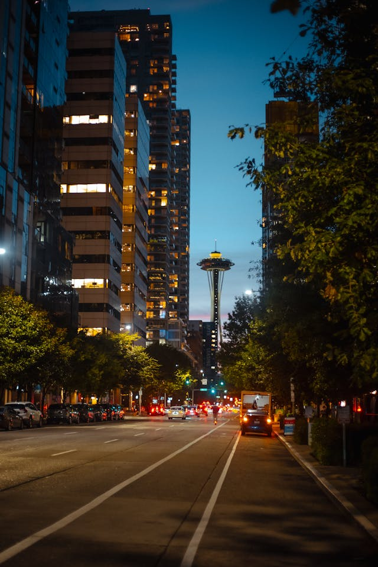

About Me
Hey, I'm XXXXXXX XXXXXXX, a current student and future software developer. I am from XXXXXXX, XXXXXXXXX, and I am passionate about building solutions that can make a positive impact. My journey has not been linear, but it has shaped me into a resilient, adaptable, and creative problem-solver. As someone who has faced significant challenges in life, I take pride in my ability to find innovative ways to overcome obstacles and push forward.
I’m a mental health advocate, and I believe that raising awareness and breaking the stigma surrounding mental health is essential for creating a compassionate and understanding society. I've spent a lot of my time working on self-growth and helping others navigate their own struggles, which has only deepened my commitment to this cause.
In my free time, I enjoy engaging in various activities that help me expand my knowledge and skills. Whether it's reading insightful books, writing thought-provoking essays, or diving deep into new topics, I am always learning. I also have a passion for music theory, piano, and singing, which not only serves as a creative outlet but also helps me relax and recharge.
With my background in tech and my drive to make a meaningful difference in the world, I am continuously working towards becoming a better version of myself. I aim to leverage my skills in software development to create tools and solutions that empower individuals and communities, particularly in the mental health space.
My Software Engineering Journey
I started my Journey in 2023:
- Started learning HTML and CSS in Jan 2023.
- Started Working with Underdog Devs in Feb 2023
- Started Courses in Western Governors University for Software Engineering in June 2023- expected graduation Winter 2025
- Received Google IT Support Certificate, AWS Cloud Practitioner Certificate, and ITIL 4 Foundation Certificate in 2023-2024
Projects
Here are some of my recent projects. Feel free to explore my work in more detail:
|  |
Washington State Website
Website created for class using HTML, CSS, and JavaScript. View Project on Netlify → |
|
World Map API Project
Interactive map API that outputs data from clicked countries. View GitHub Repo → |
|
 |
Future Project: Mental Health RPGs
RPGs focusing on mental health with story-driven gameplay. |
.jpg) |
Future Project: Bassinet Project
Resources for marginalized communities to support newborns' safety. |
Contact
If you’d like to discuss a project or just say hello, please don’t hesitate to reach out!